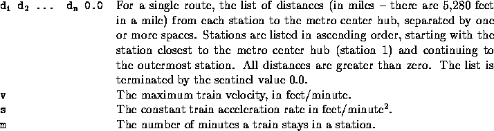

| Train Time |
City transportation planners are developing a light rail transit system to carry commuters between the suburbs and the downtown area. Part of their task includes scheduling trains on different routes between the outermost stations and the metro center hub.
Part of the planning process consists of a simple simulation of train travel. A simulation consists of a series of scenarios in which two trains, one starting at the metro center and one starting at the outermost station of the same route, travel toward each other along the route. The transportation planners want to find out where and when the two trains meet. You are to write a program to determine those results.
This model of train travel is necessarily simplified. All scenarios are based on the following assumptions.
All input values are real numbers. Data for each scenario are in the following format.

The series of runs is terminated by a data set which begins with the number -1.0.
For each scenario, output consists of the following labeled data.
15.0 0.0 5280.0 10560.0 5.0 3.5 7.0 0.0 5280.0 10560.0 2.0 3.4 7.0 0.0 5280.0 10560.0 2.0 -1.0
Scenario #1: Meeting time: 7.8 minutes Meeting distance: 7.500 miles from metro center hub Scenario #2: Meeting time: 4.0 minutes Meeting distance: 3.500 miles from metro center hub, in station 1 Scenario #3: Meeting time: 4.1 minutes Meeting distance: 3.400 miles from metro center hub, in station 1